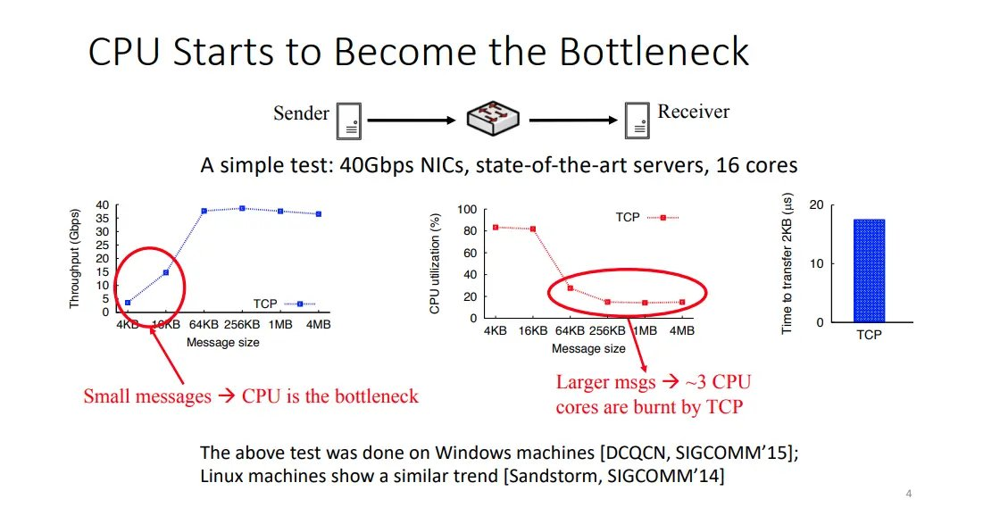

新闻 · 2026-11-20 18:00
微软公布 USB4 多 Win11 电脑协同 AI 方案，搭积木式叠加内存 / 显卡算力跑本地模型
微软于11月19日以开发者预览形式推出基于USB4的RDMA方案，使多台Win11电脑通过USB4线缆协同运行AI模型，无需专用网卡。测试显示三台128GB内存AMD迷你电脑运行2350亿参数Qwen3模型，生成速度约每秒18.5词元；英特尔四台64GB内存酷睿Ultra 3电脑运行GPT-OSS-120B模型，速度达每秒54.2词元。USB4通信延迟约28-50微秒，为传统以太网UDP方式的四分之一。

来源与核验
单一信源报道，未交叉核实